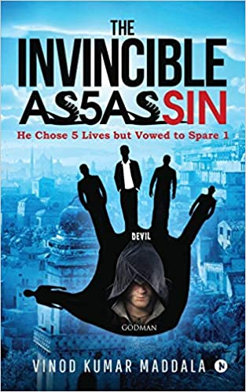
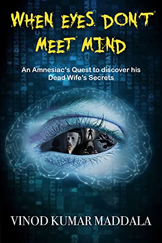

Navbar
Bio
Gallery
News
Contact
Books
The Invincible Assassin
When Eyes Don’t Meet Mind
Anthology – Against The Storm
Serendipity: An unexpected Bonding
Media Downloads

The Invincible Assassin

When Eyes Don't Meet Mind
Serendipity: An unexpected Bonding